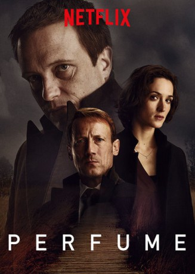

")
 gesehen am 14.02.2019
gesehen am 14.02.2019 
 IMDB-Wertung: 7.2 / 10
IMDB-Wertung: 7.2 / 10  Metascore:
Metascore: 
Eine brutale Mordserie in einer niederrheinischen Kleinstadt führt in die Vergangenheit von fünf Internatsschülern, die auf der Suche nach Macht und Liebe mit dem Geheimnis menschlichen Dufts experimentierten.
Jahr: 2018
Dauer: 52 Minuten
FSK: 16
Land: Deutschland Studio: ZDFneoTonspuren:
Untertitel:
Auflösung: 720p (1280x640) Größe: 1300 MB
Genre: Thriller, Drama, TV-Serie
Regisseur: Philipp Kadelbach
Drehbuch: Eva Kranenburg, Patrick Süskind
Soundtrack:
Darsteller:
 August Diehl als Moritz de Vries, 6 episodes, 2018
August Diehl als Moritz de Vries, 6 episodes, 2018 Ken Duken als Roman Seliger, 6 episodes, 2018
Ken Duken als Roman Seliger, 6 episodes, 2018 Christian Friedel als Daniel Sluiter, 6 episodes, 2018
Christian Friedel als Daniel Sluiter, 6 episodes, 2018 Marc Hosemann als Jens Brettschneider, 6 episodes, 2018
Marc Hosemann als Jens Brettschneider, 6 episodes, 2018 Julius Nitschkoff als Bursche 15 Jahre, 6 episodes, 2018
Julius Nitschkoff als Bursche 15 Jahre, 6 episodes, 2018 Trystan Pütter als Thomas Butsche, 6 episodes, 2018
Trystan Pütter als Thomas Butsche, 6 episodes, 2018 Wotan Wilke Möhring als Joachim Grünberg, 6 episodes, 2018
Wotan Wilke Möhring als Joachim Grünberg, 6 episodes, 2018 Friederike Becht als Nadja Simon, 6 episodes, 2018
Friederike Becht als Nadja Simon, 6 episodes, 2018Datei: X:\HD-Serien\Parfum S01\Parfum S01E01.mkv seit 08.02.2019
Festplatte: HD Serien(I-ST)
 Es gibt insgesamt 182 Filme in der Gruppe 'HD-Serien'
Es gibt insgesamt 182 Filme in der Gruppe 'HD-Serien'